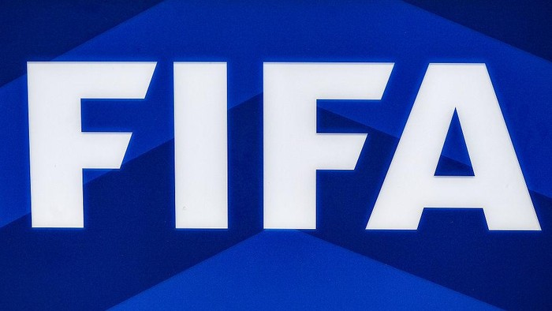
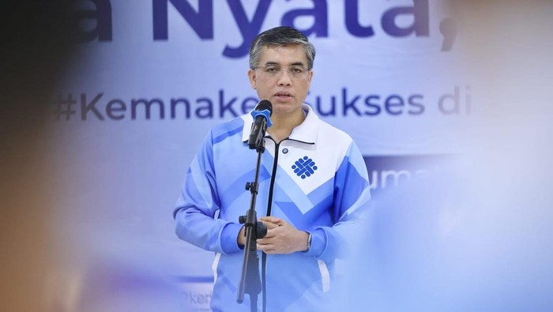
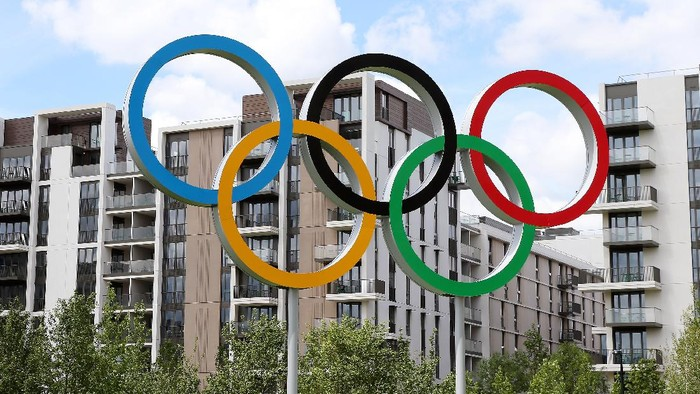

News

Menanti Restu FIFA Laga LaLiga dan Seri A Digelar di Luar Eropa
LaLiga dan Seri A berencana menggelar beberapa laga di luar Eropa pada musim 2024/2025. Rencana ini masih menunggu restu dari FIFA.
Posted on 19 June 2024

Lepas Kontingen Pornas XVII KORPRI, Menaker Tekankan Kejujuran-Sportivitas
Menteri Ketenagakerjaan (Menaker) Yassierli Djohan melepas kontingen Pekan Olahraga Nasional (PON) XVII KORPRI di Kantor Kementerian Ketenagakerjaan, Jakarta, Rabu (19/6/2024). Dalam
Posted on 19 June 2024

KOI Akan Gelar Ajang Olympic Day untuk Bakar Semangat Olimpiade
Komite Olimpiade Indonesia (KOI) akan menggelar ajang Olympic Day pada 23 Juni 2024 di Gelora
Posted on 19 June 2024